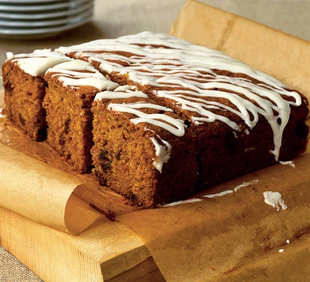

Carrot Cake
Home

Scrumptious carrot cake recipe
Delight friends with an afternoon tea that includes this easy carrot cake. You can bake the cake, freeze it and just drizzle over the icing on the day.
- 175g light muscovado sugar
- 175ml sunflower oil
- 3 large eggs, lightly beaten
- 140g grated carrot
- 100g raisins
- 175g self raising flour
- 1 tsp bicarbonate soda
- 1 tsp ground cinnamon
- 1/2 teaspoon grated nutmeg
- 175g icing sugar
- 2 tbsp orange juice
Method
- Heat the oven to 180C/160C fan/gas 4. Oil and line the base and sides of an 18cm square cake tin with baking parchment.
- Tip the sugar, sunflower oil and eggs into a big mixing bowl. Lightly mix with a wooden spoon. Stir in the carrots, raisins and orange zest.
- Sift the flour, bicarbonate of soda, cinnamon and nutmeg into the bowl. Mix everything together, the mixture will be soft and almost runny.
- Pour the mixture into the prepared tin and bake for 40-45 mins or until it feels firm and springy when you press it in the centre.